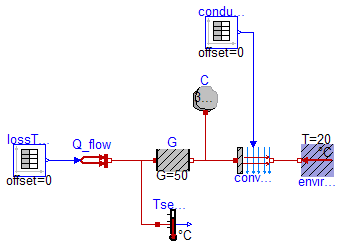
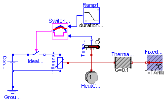

This example demonstrates the thermal response of two masses connected by a conducting element. The two masses have the same heat capacity but different initial temperatures (T1=100 [degC], T2= 0 [degC]). The mass with the higher temperature will cool off while the mass with the lower temperature heats up. They will each asymptotically approach the calculated temperature T_final_K (T_final_degC) that results from dividing the total initial energy in the system by the sum of the heat capacities of each element.
Simulate for 5 s and plot the variables
mass1.T, mass2.T, T_final_K or
Tsensor1.T.signal, Tsensor2.T.signal, T_final_degC
| Name | Default | Description |
|---|---|---|
| T_final_K | Projected final temperature [K] | |
| T_final_degC | Projected final temperature [degC] |
encapsulated model TwoMasses "Simple conduction demo"
import Modelica.Icons;
import Modelica.Thermal.HeatTransfer;
import SI = Modelica.SIunits;
import Modelica.SIunits.Conversions.*;
import NonSI = Modelica.SIunits.Conversions.NonSIunits;
extends Icons.Example;
parameter SI.Temperature T_final_K(fixed=false) "Projected final temperature";
parameter NonSI.Temperature_degC T_final_degC(fixed=false)
"Projected final temperature";
HeatTransfer.HeatCapacitor mass1(C=15, T(start=from_degC(100)));
HeatTransfer.HeatCapacitor mass2(C=15, T(start=from_degC(0)));
HeatTransfer.ThermalConductor conduction(G=10);
HeatTransfer.Celsius.TemperatureSensor Tsensor1;
HeatTransfer.Celsius.TemperatureSensor Tsensor2;
equation
connect(mass1.port, conduction.port_a);
connect(conduction.port_b, mass2.port);
connect(mass1.port, Tsensor1.port);
connect(mass2.port, Tsensor2.port);
initial equation
T_final_K = (mass1.port.T*mass1.C + mass2.port.T*mass2.C)/(mass1.C + mass2.C)
;
T_final_degC = to_degC(T_final_K);
end TwoMasses;

This example contains a simple first order thermal model of a frequency inverter. The periodic power losses in the frequency inverter are described by two tables. "conductionTable" describes the convection conduction G and "lossTable" the generated power loss P_loss dependent on the time.
The power dissipation to the environment is approximated by heat flow through a thermal conductance, partially storage of the heat in a heat capacitor and finally by forced convection to the environment, defined in the two tables.
Simulate for 5 s and plot the heat flow rate and the temperature in the frequency inverter.
encapsulated model FrequencyInverter
"First order thermal model of a frequency inverter"
import Modelica.Icons;
import Modelica.Blocks.Sources;
import Modelica.Thermal.HeatTransfer;
import SI = Modelica.SIunits;
import Modelica.SIunits.Conversions.*;
extends Icons.Example;
Sources.TimeTable conductionTable(table=[0, 0.007; 1, 0.014; 2, 0.007; 3,
0.014; 4, 0.007; 5, 0.014]);
Sources.TimeTable lossTable(table=[0, 10000; 1, 7000; 2, 10000; 3, 7000; 4
, 10000; 5, 7000]);
HeatTransfer.HeatCapacitor C(C=30000);
HeatTransfer.Celsius.TemperatureSensor Tsensor;
HeatTransfer.ThermalConductor G(G=50);
HeatTransfer.Convection convection;
HeatTransfer.PrescribedHeatFlow Q_dot;
HeatTransfer.Celsius.FixedTemperature environment(T=20);
equation
connect(Q_dot.port, G.port_a);
connect(Q_dot.port, Tsensor.port);
connect(G.port_b, convection.solid);
connect(C.port, G.port_b);
connect(environment.port, convection.fluid);
connect(lossTable.outPort, Q_dot.Q_dot);
connect(conductionTable.outPort, convection.G);
end FrequencyInverter;

A constant voltage of 10 V is applied to a temperature dependent resistor of 10*(1+(T-20C)/(235+20C)) Ohms, whose losses v**2/r are dissipated via a thermal conductance of 0.1 W/K to ambient temperature 20 degree C. The resistor is assumed to have a thermal capacity of 1 J/K, having ambient temparature at the beginning of the experiment. The temperature of this heating resistor is held by an OnOff-controller at reference temperature within a given bandwith +/- 1 K by switching on and off the voltage source. The reference temperature starts at 25 degree C and rises between t = 2 and 8 seconds linear to 50 degree C. An approppriate simulating time would be 10 seconds.
| Name | Default | Description |
|---|---|---|
| TAmb | 20 | Ambient Temperature [degC] |
| TDif | 2 | Error in Temperature [degC] |
encapsulated model ControlledTemperature
"Control temperature of a resistor"
import Modelica.Icons;
import Modelica.Blocks.Sources;
import Modelica.Electrical.Analog;
import Modelica.Thermal.HeatTransfer;
import SI = Modelica.SIunits;
import NonSI = Modelica.SIunits.Conversions.NonSIunits;
import Modelica.SIunits.Conversions.*;
extends Icons.Example;
parameter NonSI.Temperature_degC TAmb=20 "Ambient Temperature";
parameter NonSI.Temperature_degC TDif=2 "Error in Temperature";
output NonSI.Temperature_degC TRes "Resulting Temperature";
Analog.Basic.Ground Ground1;
Analog.Sources.ConstantVoltage ConstantVoltage1(V=10);
HeatTransfer.HeatCapacitor HeatCapacitor1(C=1, T(start=from_degC(TAmb)));
Analog.Basic.HeatingResistor HeatingResistor1(
R_ref=10,
T_ref=from_degC(20),
alpha=1/(235 + 20));
HeatTransfer.Celsius.FixedTemperature FixedTemperature1(T=TAmb);
HeatTransfer.Celsius.TemperatureSensor TemperatureSensor1;
HeatTransfer.ThermalConductor ThermalConductor1(G=0.1);
SwitchController SwitchController1(bandwidth=TDif);
Analog.Ideal.IdealSwitch IdealSwitch1;
Sources.Ramp Ramp1(
height={25},
duration={6},
offset={25},
startTime={2});
encapsulated block SwitchController
"On-off controller for use with Modelica.Electrical.Analog.Ideal.IdealSwitch"
import Modelica.Blocks;
extends Blocks.Interfaces.MI2BooleanMOs(final n=1);
parameter Real bandwidth=0.1 "Bandwidth around reference signal";
protected
Real u=inPort2.signal[1] "Input signal";
Real uRef=inPort1.signal[1] "Reference input signal";
Boolean y=outPort.signal[1] "Output signal";
equation
y = (u > uRef + bandwidth/2) or (pre(y) and not (u < uRef - bandwidth/2));
end SwitchController;
equation
connect(ConstantVoltage1.n, HeatingResistor1.n);
connect(ConstantVoltage1.n, Ground1.p);
connect(HeatingResistor1.heatPort, ThermalConductor1.port_a);
connect(ThermalConductor1.port_b, FixedTemperature1.port);
connect(HeatingResistor1.heatPort, TemperatureSensor1.port);
connect(HeatingResistor1.heatPort, HeatCapacitor1.port);
connect(TemperatureSensor1.T, SwitchController1.inPort2);
connect(ConstantVoltage1.p, IdealSwitch1.p);
connect(IdealSwitch1.n, HeatingResistor1.p);
connect(SwitchController1.inPort1, Ramp1.outPort);
connect(SwitchController1.outPort, IdealSwitch1.control);
TRes = to_degC(HeatingResistor1.heatPort.T);
end ControlledTemperature;

The block SwitchController sets the output signal to false when the input signal falls below the reference signal minus half of the bandwidth and sets the output signal to true when the input signal exceeds the reference signal plus half of the bandwidth.
The reference signal is represented by inPort1 and the input signal by inPort2.
Note: This component will be removed when package ModelicaAdditions.Blocks.Logical is incorporated into the Modelica Standard library.
| Name | Default | Description |
|---|---|---|
| bandwidth | 0.1 | Bandwidth around reference signal |
encapsulated block SwitchController "On-off controller for use with Modelica.Electrical.Analog.Ideal.IdealSwitch" import Modelica.Blocks; extends Blocks.Interfaces.MI2BooleanMOs(final n=1); parameter Real bandwidth=0.1 "Bandwidth around reference signal"; protected Real u=inPort2.signal[1] "Input signal"; Real uRef=inPort1.signal[1] "Reference input signal"; Boolean y=outPort.signal[1] "Output signal"; equation y = (u > uRef + bandwidth/2) or (pre(y) and not (u < uRef - bandwidth/2)); end SwitchController;